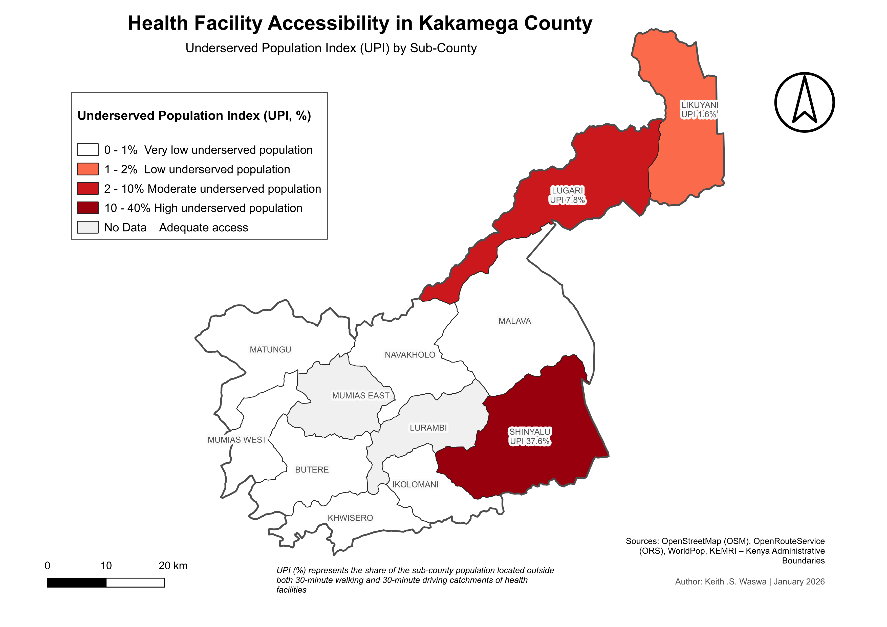

Health Facility Accessibility Analysis
Network-based spatial accessibility assessment measuring the time required for residents to reach the nearest health facility under walking and driving conditions. The project identifies underserved populations and supports evidence‑based healthcare planning.
Objective
To quantify inequality in healthcare access by modelling realistic travel time instead of straight‑line distance and identifying priority intervention zones.
Data Sources
- Health facilities – OpenAfrica
- Road network – OpenStreetMap
- Population distribution – WorldPop
- Administrative boundaries – KEMRI
Methodology
- Road network cleaning and topology correction
- Assignment of travel speeds by road class
- Shortest‑path routing to nearest facility
- Isochrone generation for walking and driving scenarios
- Population overlay to compute Underserved Population Index (UPI)
Underserved Population Index
UPI represents the proportion of residents located outside both 30‑minute walking and 30‑minute driving service areas. High values indicate populations facing delayed access to healthcare services and priority areas for facility expansion.

Walking Accessibility
Large peripheral settlements exceed the 30‑minute threshold, showing that residents without motorized transport experience limited access to primary healthcare and potential emergency response delays.

Driving Accessibility
Motorized travel improves coverage but isolated pockets remain beyond acceptable travel time due to sparse road connectivity and facility distribution.

Key Findings
- Urban centres have near‑complete service coverage
- Peripheral sub‑counties contain most underserved population
- Walking accessibility inequality is significantly higher than driving accessibility
- Road connectivity strongly influences healthcare access
Impact
Results support facility siting decisions, ambulance response planning, and rural infrastructure prioritization by highlighting where travel time limits equitable healthcare access.
Tools & Techniques
- QGIS spatial analysis
- Network routing and isochrone modelling
- Raster‑vector overlay analysis
- Cartographic visualization